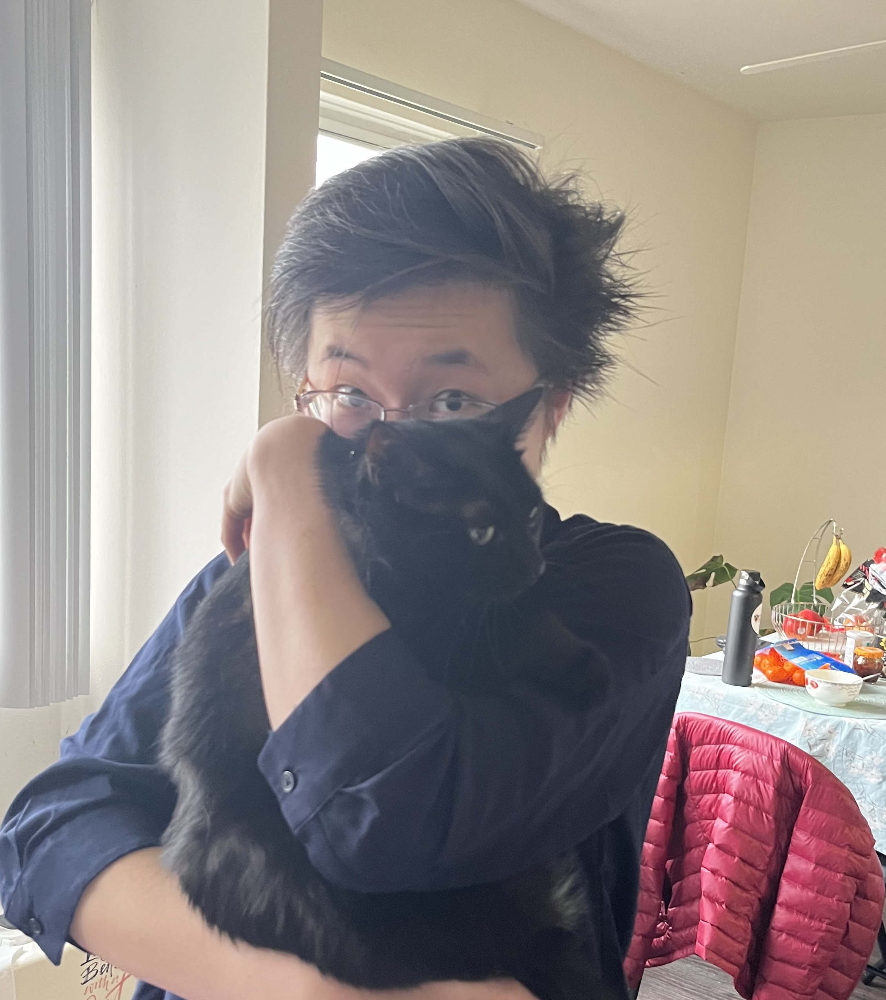

About Me
I am a third-year Ph.D. student in the Department of Physics at the University of Michigan. I work with Henriette Elvang and Leopoldo Pando-Zayas on various topics in particle theory and quantum gravity. Originally from Virginia, I obtained my undergraduate degree from Princeton University in 2022. I wrote my undergraduate thesis under the supervision of Silviu Pufu and Igor Klebanov. After graduating, I took a gap year to teach middle- and high-school math in New Jersey before beginning my Ph.D. at Michigan. Outside of physics, I enjoy playing piano, taking photos, and hanging out with my cats.

Research
- S-matrix bootstrap: Using UV consistency conditions like unitarity, Lorentz invariance, and locality, we are able to constrain the low-energy data of effective field theories. Such bounds can be used to corner string theory in the space of possible UV completions of field theory, or to make phenomenological predictions for Beyond Standard Model physics.
- Low dimensional holography: The central dogma of AdS/CFT tells us that there should be a quantum mechanical description of black holes. We aim to construct and solve an explicit quantum system by dimensionally reducing known holographic field theories, such as maximally supersymmetric Yang-Mills.
- Strongly-coupled gauge theories and matrix models: Recent numerical advances such as lattice gauge theory, tensor networks, and quantum mechanical bootstrap have given us access to non-perturbative physics. By applying gauge theory methods to matrix models (e.g. tensor networks) and vice versa (e.g. QM bootstrap), we continue developing these tools and finding new uses for them.
Papers
Contact
- Email: lokilin@umich.edu
- inspire
What are my pronouns?
Great question! The answer has been lost to time.
Call me whatever you want as long as it's not a slur.